В заданиях ЕГЭ с IP-адресами от вас, золотые мои, не требуется знать теорию сетей. Вообще. Всё, что нужно, укладывается в несколько простых идей.
-
IP-адрес IPv4 — это просто число из 32 бит. Для удобства его записывают в виде четырёх десятичных чисел от 0 до 255, разделённых точками. Никакой магии здесь нет — это просто форма записи.
-
Маска сети — это тоже 32-битное число, но с жёстким правилом: сначала в ней идут единицы, а потом — нули, и только так. Единицы отвечают за часть адреса сети, нули — за часть адреса конкретного компьютера.
Чтобы понять, к какой сети относится IP-адрес, делают простую операцию:
берут IP-адрес и маску и применяют к ним побитовое “И” (AND).
Адрес_сети = (IP) AND (Маска)
Результат этой операции — адрес сети. Именно так он и определяется в заданиях.
Важно запомнить простую логику:
- биты, где в маске стоят 1, относятся к адресу сети;
- биты, где в маске стоят 0, относятся к адресу узла (компьютера).
Есть два адреса, которые никогда нельзя назначать компьютеру, и это принципиально важно для задач:
- адрес сети — когда во всех битах узла стоят нули;
- широковещательный адрес — когда во всех битах узла стоят единицы
(он всегда зависит от конкретной сети, это не какой-то один «общий» адрес).
Все остальные адреса между ними — допустимые адреса компьютеров.
На практике в ЕГЭ почти всегда спрашивают одно и то же:
- минимальный или максимальный IP-адрес, который можно назначить компьютеру;
- сколько всего адресов или сколько адресов удовлетворяют условию;
- иногда — подсчёт адресов по битам (сколько единиц, нулей и т.п.);
- какой максимальное / минимальное значения определенного байта IP / маски.
Пример 1)
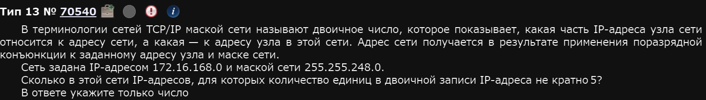
На самом деле (ни тебя, ни меня нет), №13 прогается гораздо проще, нежели решается руками. Для того, чтобы запрогать это задание нам понадобится стандартная библиотека питона ipaddress т.е. ее не нужно скачивать, она встроена в ваш питон. Ее всего-то надо импортировать:
from ipaddress import *Далее, мы должны собсна задать наши IP адреса. Делается это командой ip_network. Я сделаю это с помощью f-строки, однако вы можете делать как вам угодно:
net = ip_network(f'172.16.168.0/255.255.248.0', 0)
#Сначала записывается IP сети, потом маска через знак /; Параметр 0 означает, что сеть будет интепретирована как IPv4 (если вместо 0 указать 1, то как IPv6)Переменная net содержит в себе неявный список (?) всех IP адресов сети с заданной маской. Для маски 255.255.248.0 их 2048 (): (от 172.16.168.0 до 172.16.175.255). Введем переменную cnt, которая будет считать те IP-адреса, в которых как раз число единиц не кратно 5. А для того, чтобы собсна посчитать единицы надо перевести каждый IP в двоичную систему. Итак:
for ip in net: #Для каждого IP в сети
s = f'{ip:b}' #Вот этим действием переводим в двоичную систему каждый IP
if s.count('1') % 5 != 0: #Тут условие на некратность 5
cnt += 1
print(cnt)Как именно работает перевод s = f'{ip:b}? Питон считает каждый из IP-шников целым числом (например, - 172.16.168.0 в десятичной системе — это 2886732288, если представить IP как одно целое число. Двоичное представление числа 2886732288 будет 10101100000100001010100000000000; чтобы перевести IP-шку в целое число питон должен стандартным школьным образом перевести последовательно каждый из октетов (это типа 172, 16, 186 и 0) из 256-битной системы счисления в десятичную; Этот процесс эквивалентен такому: перевести каждый из октетов в двоичную и записать биты подряд). Индекс :b, в свою очередь говорит о том, что вот это вот целое число IP-шника надо представить в двоичной системе.
Ну а дальше дело техники - соединяем код.
from ipaddress import *
net = ip_network(f'172.16.168.0/255.255.248.0', 0)
cnt = 0
for ip in net:
s = f'{ip:b}'
if s.count('1') % 5 != 0:
cnt += 1
print(cnt)Ответ: 1663.
Чем приколен именно такой метод решения этого задания - он универсален. С его помощью можно решать +- любые задания №13.
Пример 2)
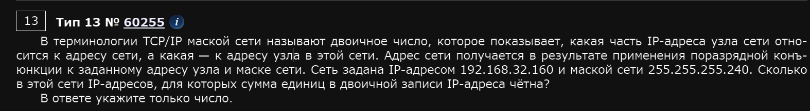
Вообще, когда-то в этой методичке были разборы №13 и конкретного этого задания, прости господи, из Excel. Но, подумав, я решил полностью забить на иные варианты решения и оставить только код. Даже варианты, которые якобы решаются только руками можно закодить. Ну, либо их нет на экзамене.
from ipaddress import *
net = ip_network("192.168.132.160/255.255.255.240", 0)
count = 0
for ip_add in net:
if f"{ip_add:b}".count("1") % 2 == 0:
count += 1
print(count)Пример 3)
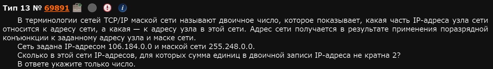
from ipaddress import *
net = ip_network("106.184.0.0/255.248.0.0", 0)
count = 0
for ip_add in net:
if f"{ip_add:b}".count("1") % 2 != 0:
count += 1
print(count)Ответ: 262144.
Пример 4)
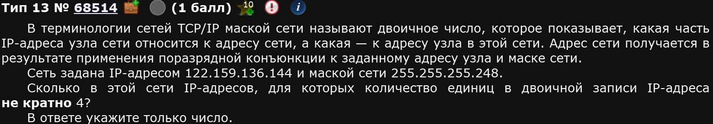
Опять же, меняются IP-шки и условие:
from ipaddress import *
net = ip_network(f'122.159.136.144/255.255.255.248', 0)
cnt = 0
for ip in net:
s = f'{ip:b}'
if s.count('1') % 4 != 0:
cnt += 1
print(cnt)Ответ: 5
Пример 5)
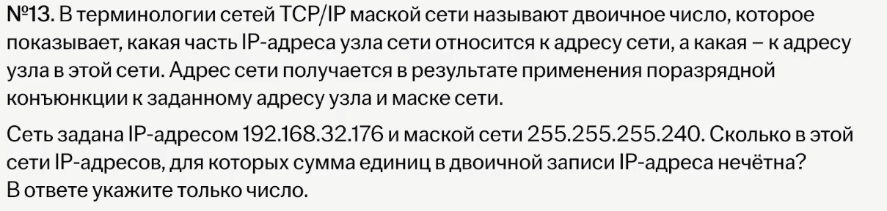
from ipaddress import *
ip_net = ip_network("192.168.32.176/255.255.255.240", 0)
count = 0
for ip_add in ip_net:
if f"{ip_add:b}".count("1") % 2 != 0:
count += 1
print(count)Пример 6)
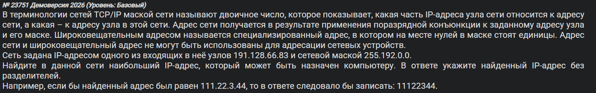
Вот с такими можно гигатупо поступать.
from ipaddress import *
net = ip_network(f"191.128.66.83/255.192.0.0", 0)
max_ip = max(net.hosts())
print(max_ip)Пример 7)
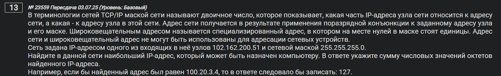
В ответе укажите сумму числовых значений октетов найденного IP-адреса.
from ipaddress import *
net = ip_network("102.162.200.51/255.255.255.0", 0)
max_ip = max(net.hosts())
print(max_ip)
sumi = sum(int(x) for x in str(max_ip).split('.'))
print(sumi)Тут интересна вот эта строка:
sumi = sum(int(x) for x in str(max_ip).split('.'))По порядку:
sumсука суммируетint(x)переводит строкуxв числоfor x in ...для каждогоxв ,,,str(max_ip)- этоmax_ip, записанный в строку.split('.')- разделяет строку типа'X.Y.Z.W'на строки'X', 'Y', 'Z', 'W'- Как итог под суммой стоят числа
max_ipв десятичном представлении и она их сука суммирует
Ответ: 718
Пример 8)
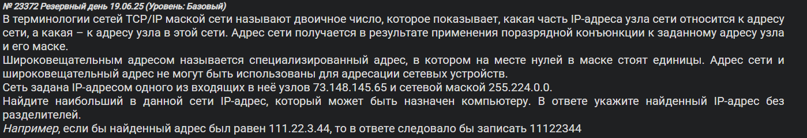
from ipaddress import *
net = ip_network("73.148.145.65/255.224.0.0", 0)
max_ip = max(net.hosts())
print(max_ip)Пример 9)
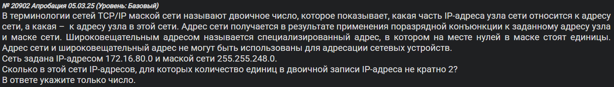
from ipaddress import *
net = ip_network("172.16.80.0/255.255.248.0", 0)
count = 0
for ip_add in net:
if f"{ip_add:b}".count("1") % 2 != 0:
count += 1
print(count)Пример 10)
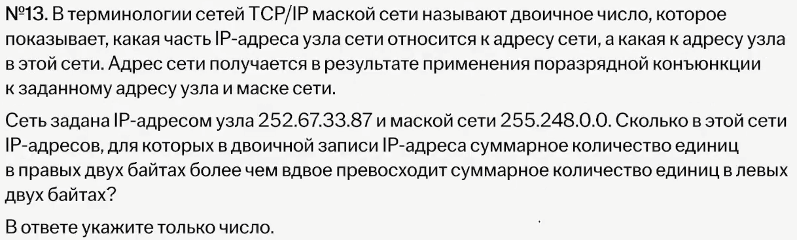
from ipaddress import *
net = ip_network("252.67.33.87/255.248.0.0", 0)
count = 0
for ip_add in net:
razdel = [bin(int(x))[2:] for x in str(ip_add).split('.')]
# print(razdel)
if (razdel[2].count("1") + razdel[3].count("1")) > (razdel[0].count("1") + razdel[1].count("1")) * 2:
count += 1
print(count)Собсна, тут у нас можно проследить как с байтами работать, чтобы уважали. Идея: мы также, как и в примере 7 разделяем IP на отдельные числа, но на этот раз сохраняем это списком. Еще и в двоичном виде. Это осуществляет вот эта строка:
razdel = [bin(int(x))[2:] for x in str(ip_add).split('.')]Как итог, если мы принтанем, то получим следующее:
...
['11111100', '1000000', '11001000', '100000']
['11111100', '1000000', '11001000', '100001']
['11111100', '1000000', '11001000', '100010']
['11111100', '1000000', '11001000', '100011']
['11111100', '1000000', '11001000', '100100']
['11111100', '1000000', '11001000', '100101']
['11111100', '1000000', '11001000', '100110']
['11111100', '1000000', '11001000', '100111']
['11111100', '1000000', '11001000', '101000']
['11111100', '1000000', '11001000', '101001']
['11111100', '1000000', '11001000', '101010']
...
А если без bin, то тогда вот так:
...
[252, 64, 92, 158]
[252, 64, 92, 159]
[252, 64, 92, 160]
[252, 64, 92, 161]
[252, 64, 92, 162]
[252, 64, 92, 163]
[252, 64, 92, 164]
[252, 64, 92, 165]
[252, 64, 92, 166]
[252, 64, 92, 167]
[252, 64, 92, 168]
[252, 64, 92, 169]
[252, 64, 92, 170]
[252, 64, 92, 171]
[252, 64, 92, 172]
[252, 64, 92, 173]
[252, 64, 92, 174]
[252, 64, 92, 175]
...
Ровно то, что мы хотели. Осталось сравнить биты. Это делается вот так:
if razdel[2].count("1") + razdel[3].count("1") > 2* (razdel[0].count("1") + razdel[1].count("1")):Наглядно? Наглядно.
Ну и все.
Ответ: 17
Можно еще вот так, но тут я оставлю без комментариев:
from ipaddress import *
ip_net = ip_network("252.67.33.87/255.248.0.0", 0)
cnt = 0
for ip_add in ip_net:
if f"{ip_add:b}"[16:].count("1") / f"{ip_add:b}"[:16].count("1") > 2:
cnt += 1
print(cnt)Пример 11)
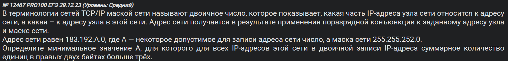
from ipaddress import *
mask = "255.255.252.0"
# для /22 третий октет в адресе сети должен быть кратен 4
for A in range(0, 256, 4):
net = ip_network(f"183.192.{A}.0/{mask}", strict=False)
ok = True
for ip in net:
last16 = int(ip) & 0xFFFF # правые два байта
ones = bin(last16).count("1") # число единиц в них
if ones <= 3: # должно быть строго больше 3
ok = False
break
if ok:
print(A)
breakЕсли что 0xFFFF - это число в 16ой степени счисления равное
0xFFFF = 00000000 00000000 11111111 11111111
Т.е. фактически, это маска, отсекающая левые два байта.